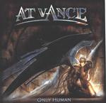

| Artist: | At Vance |
| Title: | Only Human |
| Label: | PL Records 506382 2 |
| Length(s): | 64 minutes |
| Year(s) of release: | 2002 |
| Month of review: | [05/2002] |
| 1) | The Time Has Come | 3.55 |
| 2) | Only Human | 5.15 |
| 3) | Take My Pain | 4.20 |
| 4) | Fly To The Rainbow | 6.12 |
| 5) | Hold Your Fire | 5.49 |
| 6) | Four Seasons/Spring | 3.07 |
| 7) | Take Me Away | 4.50 |
| 8) | Time | 5.50 |
| 9) | Solfeggietto | 1.02 |
| 10) | Sing This Song | 7.00 |
| 11) | Witches Dance | 5.33 |
| 12) | Wings To Fly | 6.39 |
| 13) | I Surrender | 4.23 |
Fly To The Rainbow has staccato guitars and an epic feel. At the end the classical guitars remind of Yngwie. Hold Your Fire is not a Rush cover and a touch too melodramatic. I was never fond of Vivaldi's Four Seasons/Spring and the rendition here does not change my opinion. On Take Me Away the band goes for a more playful approach plus organ. The lyrics continue to be a bit standard and the end result is again rather trite, notwithstanding some raging rhythm guitars.
Threshold is the main reference on Time. An Arabic melody, a plodding rhythm, the low background vocals are very good on this one. One of the better tracks. After the short Bach cover Solfeggietto, Sing This Song is one of the longest tracks on the album. The keyboards are percussive, dark vocals, wind, a rhythm guitar build a somber atmosphere. The melody is strong and the song has a certain tension. Too bad, the chorus is so catchy by comparison.
Witches Dance is rather standard notwithstanding the opening vocal samples: plain heavy progmetal, nothing more. Wings To Fly however is a very slow and almost tragic track with plenty of synth strings. I Surrender, finally, is the bonus track orginally written by Russ Ballard. A very catchy track of rowdy rock and plenty organ that you probably even know already.